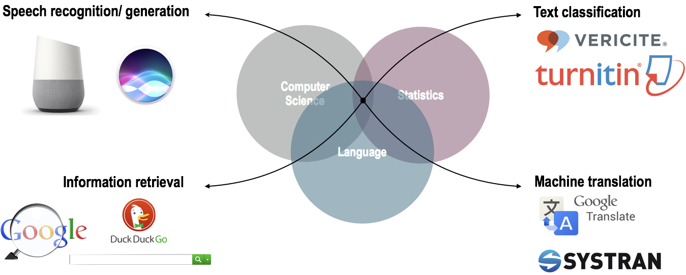

1 Text analysis in context
Science walks forward on two feet, namely theory and experiment…Sometimes it is one foot which is put forward first, sometimes the other, but continuous progress is only made by the use of both.
Keys
- What is the role and goals of data analysis in and outside of academia?
- In what ways is quantitative language research approached?
- What are some of the applications of text analysis?
In this chapter I will aim to introduce the topic of text analysis and text analytics and frame the approach of this textbook. The aim is to introduce the context needed to understand how text analysis fits in a larger universe of data analysis and see the commonalities in the ever-ubiquitous field of data analysis, with attention to how linguistics and language-related studies employ data analysis down to the particular area of text analysis. To round out this chapter, I will provide a general overview of the rest of the textbook motivating the general structure and sequencing as well as setting the foundation for programmatic approaches to data analysis.
Swirl
What: Variables and vectors, Workspace
How: In the R Console pane load swirl, run swirl(), and follow prompts to select the lesson.
Why: To explore some key building blocks of the R programming language and to examine your local workspace in R and understand the relationship between your R workspace and the file system of your machine.
1.1 Making sense of a complex world
The world around us is full of actions and interactions so numerous that it is difficult to really comprehend. Through this lens each individual sees and experiences this world. We gain knowledge about this world and build up heuristic knowledge about how it works and how we do and can interact with it. This happens regardless of your educational background. As humans we are built for this. Our minds process countless sensory inputs many of which never make it to our conscious mind. They underlie skills and abilities that we take for granted like being able to predict what will happen if you see someone about to knock a wine glass off a table and onto a concrete floor. You’ve never seen this object before and this is the first time you’ve been to this winery, but somehow and from somewhere you ‘instinctively’ make an effort to warn the would-be-glass-breaker before it is too late. You most likely have not stopped to consider where this predictive knowledge has come from, or if you have, you may have just chalked it up to ‘common sense’. As common as it may be, it is an incredible display of the brain’s capacity to monitor your environment, relate the events and observations that take place, and store that information all the time not making a big fuss to tell your conscious mind what it’s up to.
So wait, this is a textbook on text analysis, right? So what does all this have to do with that? Well, there are two points to make that are relevant for framing our journey: (1) the world is full of countless information which unfold in real-time at a scale that is daunting and (2) for all the power of the brain that works so efficiently behind the scene making sense of the world, we are one individual living one life that has a limited view of the world at large. Let me expand on these two points a little more.
First let’s be clear. There is no way for anyone to experience all things at all times. But even extremely reduced slices of reality are still vastly outside of our experiential capacity, at least in real-time. One can make the point that since the inception of the internet an individual’s ability to experience larger slices of the world has increased. But could you imagine reading, watching, and listening to every file that is currently accessible on the web? Or has been? (See the Wayback Machine.) Scale this down even further; let’s take Wikipedia, the world’s largest encyclopedia. Can you imagine reading every wiki entry? As large as a resource such as Wikipedia is 1, it is still a small fragment of the written language that is produced on the web, just the web 2. Consider that for a moment.
To my second framing point, which is actually two points in one. I underscored the efficiency of our brain’s capacity to make sense of the world. That efficiency comes from some clever evolutionary twists that lead our brain to take in the world but it makes some shortcuts that compress the raw experience into heuristic understanding. What that means is that the brain is not a supercomputer. It does not store every experience in raw form, we do not have access to the records of our experience like we would imagine a computer would have access to the records logged in a database. Where our brains do excel is in making associations and predictions that help us (most of the time) navigate the complex world we inhabit. This point is key –our brains are doing some amazing work, but that work can give us the impression that we understand the world in more detail that we actually do. Let’s do a little thought experiment. Close your eyes and think about the last time you saw your best friend. What were they wearing? Can you remember the colors? If your like me, or any other human, you probably will have a pretty confident feeling that you know the answers to these questions and there is a chance you a right. But it has been demonstrated in numerous experiments on human memory that our confidence does not correlate with accuracy (Talarico and Rubin 2003; Roediger and McDermott 2000). You’ve experienced an event, but there is no real reason that we should bet our lives on what we experienced. It’s a little bit scary, for sure, but the magic is that it works ‘good enough’ for practical purposes.
So here’s the deal: as humans we are (1) clearly unable to experience large swaths of experience by the simple fact that we are individuals living individual lives and (2) the experiences we do live are not recorded with precision and therefore we cannot ‘trust’ our intuitions, at least in an absolute sense.
What does that mean for our human curiosity about the world around us and our ability to reliably make sense of it? In short it means that we need to approach understanding our world with the tools of science. Science is so powerful because it makes strides to overcome our inherit limitations as humans (breadth of our experience and recall and relational abilities) and bring a complex world into a more digestible perspective. Science starts with question, identifies and collects data, careful selected slices of the complex world, submits this data to analysis through clearly defined and reproducible procedures, and reports the results for others to evaluate. This process is repeated, modifying, and manipulating the procedures, asking new questions and positing new explanations, all in an effort to make inroads to bring the complex into tangible view.
In essence what science does is attempt to subvert our inherent limitations in understanding by drawing on carefully and purposefully collected slices of observable experience and letting the analysis of these observations speak, even if it goes against our intuitions (those powerful but sometime spurious heuristics that our brains use to make sense of the world).
1.2 Data analysis
At this point I’ve sketched an outline strengths and limitations of humans’ ability to make sense of the world and why science is used to address these limitations. This science I’ve described is the one you are familiar with and it has been an indispensable tool to make sense of the world. If you are like me, this description of science may be associated with visions of white coats, labs, and petri dishes. While science’s foundation still stands strong in the 21st century, a series of intellectual and technological events mid-20th century set in motion changes that have changed aspects about how science is done, not why it is done. We could call this Science 2.0, but let’s use the more popularized term Data Science. The recognized beginnings of Data Science are attributed to work in the “Statistics and Data Analysis Research” department at Bell Labs during the 1960s. Although primarily conceptual and theoretic at the time, a framework for quantitative data analysis took shape that would anticipate what would come: sizable datasets which would “[…] require advanced statistical and computational techniques […] and the software to implement them.” (Chambers 2020) This framework emphasized both the inference-based research of traditional science, but also embraced exploratory research and recognized the need to address practical considerations that would arise when working with and deriving insight from an abundance of machine-readable data.
Fast-forward to the 21st century a world in which machine-readable data is truly in abundance. With increased computing power and innovative uses of this technology the world wide web took flight. To put this in perspective, in 2019 it was estimated that every minute 511 thousand tweets were posted, 18.1 million text messages were sent, and 188 million emails were sent (“Data Never Sleeps 7.0 Infographic” 2019). The data flood has not been limited to language, there are more sensors and recording devices than ever before which capture evermore swaths of the world we live in (Desjardins 2019). Where increased computing power gave rise to the influx of data, it is also one of the primary methods for gathering, preparing, transforming, analyzing, and communicating insight derived from this data (Donoho 2017). The vision laid out in the 1960s at Bell Labs had come to fruition.
The interest in deriving insight from the available data is now almost ubiquitous. The science of data has now reached deep into all aspects of life where making sense of the world is sought. Predicting whether a loan applicant will get a loan (Bao, Lianju, and Yue 2019), whether a lump is cancerous (Saxena and Gyanchandani 2020), what films to recommend based on your previous viewing history (Gomez-Uribe and Hunt 2015), what players a sports team should sign (Lewis 2004) all now incorporate a common set of data analysis tools.
These advances, however, are not predicated on data alone. As envisioned by researchers at Bell Labs, turning data into insight it takes computing skills (i.e. programming), statistical knowledge, and, importantly, domain expertise. This triad has been popularly represented in a Venn diagram Figure 1.1.
This same toolbelt underlies well-known public-facing language applications. From the language-capable personal assistant applications, plagiarism detection software, machine translation, and search engines, tangible results of quantitative approaches to language are becoming standard fixtures in our lives.

The spread of quantitative data analysis too has taken root in academia. Even in areas that on first blush don’t appear to be approachable in a quantitative manner such as fields in the social sciences and humanities, data science is making important and sometimes disciplinary changes to the way that academic research is conducted. This textbook focuses in on a domain that cuts across many of these fields; namely language. At this point let’s turn to quantitative approaches to language.
1.3 Language analysis
Language is a defining characteristic of our species. As such, the study of language is of key concern to a wide variety of fields, not just linguistics. The goals of various fields, however, and as such approaches to language research, vary. On the one hand some language research traditions within linguistics, namely those closely associated with Noam Chomsky, eschewed quantitative approaches to language research during the later half of the 20th century and instead turned to qualitative assessment of language structure through introspective methods. On the other hand many language research programs, in and outside linguistics, turned to and/or developed quantitative research methods either by necessity or through theoretical principles. These quantitative research trajectories share much of the common data analysis toolbox described in the previous section. This means to a large extent language analysis projects share a common research language with other language research but also with research beyond outside of language.
However, there is never a one-size-fits all approach to anything –much less data analysis. And in quantitative analysis there is a key distinction in data collection that has downstream effects in terms of procedure but also in terms of interpretation. The key distinction, that we need to make at this point, which will provide context for our exploration of text analysis, comes down to the approach to collecting language data and the nature of that data. This distinction is between experimental data and observational data.
Experimental approaches start with a intentionally designed hypothesis and lay out a research methodology with appropriate instruments and a plan to collect data that shows promise for shedding light on the validity of the hypothesis. Experimental approaches are conducted under controlled contexts, usually a lab environment, in which participants are recruited to perform a language related task with stimuli that have been carefully curated by researchers to elicit some aspect of language behavior of interest. Experimental approaches to language research are heavily influenced by procedures adapted from psychology. This link is logical as language is a central area of study in cognitive psychology. This approach looks a much like the white-coat science that we made reference to earlier but, as in most quantitative research, has now taken advantage of the data analysis toolbelt to collect and organize much larger quantities of data and conduct statistically more robust analysis procedures and communicate findings more efficiently.
Observational approaches are a bit more of a mixed bag in terms of the rationale for the study; they may either start with a testable hypothesis or in other cases may start with a more open-ended research question to explore. But a more fundamental distinction between the two is drawn in the amount of control the researcher has on contexts and conditions in which the language behavior data to be collected is produced. Observational approaches seek out records of language behavior that is produced by language speakers for communicative purposes in natural(istic) contexts. This may take place in labs (language development, language disorders, etc.), but more often than not, language is collected from sources where speakers are performing language as part of their daily lives –whether that be posting on social media, speaking on the telephone, making political speeches, writing class essays, reporting the latest news for a newspaper, or crafting the next novel destined to be a New York Times best-seller. What is more, data collected from the ‘wild’ varies more in structure relative to data collected in experimental approaches and requires a number of steps to prepare the data to sync up with the data analysis toolbelt.
I liken this distinction between experimental and observational data collection to the difference between farming and foraging. Experimental approaches are like farming; the groundwork for a research plan is designed, much as a field is prepared for seeding, then the researcher performs as series of tasks to produce data, just as a farmer waters and cares for the crops, the results of the process bear fruit, data in our case, and this data is harvested. Observational approaches are like foraging; the researcher scans the available environmental landscape for viable sources of data from all the naturally existing sources, these sources are assessed as to their usefulness and value to address the research question, the most viable is selected, and then the data is collected.
The data acquired from both of these approaches have their trade-offs, just as farming and foraging. Experimental approaches directly elicit language behavior in highly controlled conditions. This directness and level of control has the benefit of allowing researchers to precisely track how particular experimental conditions effect language behavior. As these conditions are an explicit part of the design and therefore the resulting language behavior can be more precisely attributed to the experimental manipulation. The primary shortcoming of experimental approaches is that there is a level of artificialness to this directness and control. Whether it is the language materials used in the task, the task itself, or the fact that the procedure takes place under supervision the language behavior elicited can diverge quite significantly from language behavior performed in natural communicative settings. Observational approaches show complementary strengths and shortcomings. Whereas experimental approaches may diverge from natural language use, observational approaches strive to identify and collected language behavior data in natural, uncontrolled, and unmonitored contexts. In this way observational approaches do not have to question to what extent the language behavior data is or is not performed as a natural communicative act. On the flipside, the contexts in which natural language communication take place are complex relative to experimental contexts. Language collected from natural contexts are nested within the complex workings of a complex world and as such inevitably include a host of factors and conditions which can prove challenging to disentangle from the language phenomenon of interest but must be addressed in order to draw reliable associations and conclusions.
%% left to right flowchart of experimental approaches. First branch experimental vs. observational. Each subbranch has its pros and cons.
graph TD
A{{Approaches}} --> B[Experimental]
B --> D[Strengths]
D --> H[Controlled conditions]
B --> E[Shortcomings]
E --> J[Level of artificialness]
A --> C[Observational]
C --> F[Strengths]
F --> L[Level of naturalness]
C --> G[Shortcomings]
G --> N[Uncontrolled conditions]
The upshot, then, is twofold: (1) data collection methods matter for research design and interpretation and (2) there is no single best approach to data collection, each have their strengths and shortcomings. In the ideal, a robust science of language will include insight from both experimental and observational approaches (Gilquin and Gries 2009). And evermore there is greater appreciation for the complementary nature of experimental and observational approaches and a growing body of research which highlights this recognition. Given their particular trade-offs observational data is often used as an exploratory starting point to help build insight and form predictions that can then be submitted to experimental conditions. In this way studies based on observational data serve as an exploratory tool to gather a better and more externally valid view of language use which can then serve to make prediction that can be explored with more precision in an experimental paradigm. However, this is not always the case; observational data is also often used in hypothesis-testing contexts as well. And furthermore, some in some language-related fields, a hypothesis-testing is not the ultimate goal for deriving knowledge and insight.
1.4 Text analysis
Text analysis is the application of data analysis procedures from data science to derive insight from textual data collected through observational methods. I have deliberately chosen the term ‘text analysis’ to avoid what I see are the pitfalls of using some other common terms in the literature such as Corpus Linguistics, Computational Linguistics, or Digital Humanities. In Figure 1.4 I have highlighted some of the academic fields that employ text analysis.
There are plenty of learning resources that focus specifically on one of these three fields when discussing the quantitative analysis of text. But from my perspective what is missing is a resource which underscores the fact that text analysis research and the methods employed span across a wide variety of academic fields (and applications in industry). This textbook aims to introduce you to these areas and provides a wider view of the potential applications of using text as data and inspires you to either employ quantitative text analysis in your research and/ or to raise your awareness of the advantages of text analysis for making sense of language-related and linguistic-based phenomenon.
So what are some applications of text analysis? The most public facing applications stem from Computational Linguistic research, often known as Natural Language Processing (NLP) by practitioners. Whether it be using search engines, online translators, submitting your paper to plagiarism detection software, etc. the text analysis methods we will cover are at play. These uses of text analysis are production-level applications and there is big money behind developing evermore robust text analysis methods.
In academia the use of quantitative text analysis is even more widespread, despite the lack of public fanfare. Let’s run through some select studies to give you an idea of some areas that employ text analysis, to highlight a range of topics researchers address with text analysis, and to whet your interest for conducting your own text analysis project.
Case study
Eisenstein et al. (2012) track the geographic spread of neologisms from city to city in the United States using Twitter data collected between 6/2009 and 5/2011. They only used tweets with geolocation data and then associated each tweet with a zip code using the US Census. The most populous metropolitan areas were used. They also used the demographics from these areas to make associations between lexical innovations and demographic attributes. From this analysis they are able to reconstruct a network of linguistic influence. One of the main findings is that demographically-similar cities are more likely to share linguistic influence. At the individual level, there is a strong, potentially stronger role of demographics than geographical location.
Case study
Voigt et al. (2017) explore potential racial disparities in officer respect in police body camera footage. The dataset is based on body camera footage from the Oakland Police Department during April 2014. At total of 981 stops by 245 different officers were included (black 682, white 299) and resulted in 36,738 officer utterances. The authors found evidence for racial disparities in respect but not formality of utterances, with less respectful language used with the black community members.
Case study
Conway et al. (2012) investigate whether the established drop in language complexity of rhetoric in election seasons is associated with election outcomes. The authors used US Democratic Primary Debates from 2004. The results suggest that although there was no overall difference in complexity between winners and losers, their pattern differed over time. Winners tended to drop the complexity of their language closer to the upcoming election.
Case study
Kloumann et al. (2012) explore the extent to which languages are positively, neutrally, or negatively biased. Using Twitter, Google Books (1520-2008), NY Times newspaper (1987-2007), and music lyrics (1960-2007) the authors extract the top 5,000 most frequent words from each source and have participants rate each word for happiness (9-point scale). The results show that positive words strongly outnumber negative words overall suggesting English is positive-, and pro-social- biased.
Case study
Bychkovska and Lee (2017) investigates possible differences between L1-English and L1-Chinese undergraduate students’ use of lexical bundles, multiword sequences which are extended collocations (i.e. as the result of), in argumentative essays. The authors used the Michigan Corpus of Upper-Level Student Papers (MICUSP) corpus using the argumentative essay section for L1-English and the Corpus of Ohio Learner and Teacher English (COLTE) for the L1-Chinese English essays. They found that L1-Chinese writers used more than 2 times as many bundle types than L1-English peers which they attribute to L1-Chinese writers attempt to avoid uncommon expressions and/or due to their lack of register awareness (conversation has more bundles than writing generally).
Case study
Jaeger and Snider (2007) use a corpus study to investigate the phenomenon of syntactic persistence, the increased tendency for speakers to use a particular syntactic form over an alternate when the syntactic form is recently processed. The authors attempt to distinguish between two competing explanations for the phenomenon: (1) transient activation, where the increased tendency is short-lived and time-bound and (2) implicit learning, where the increased tendency is a reflect of learning mechanisms. The use of a speech corpora (Switchboard and spoken BNC) were used to avoid the artificialness that typically occurs in experimental settings. The authors investigated the ditransitive alternation (NP PP/ NP NP), voice alternation (active/ passive), and complementizer/ relativizer omission. In these alternations structural bias was established by measuring the probability for a verb form to appear in one of the two syntactic forms. Then the probability that that form (target) would change given previous exposure to the alternative form (prime) was calculated; what the authors called surprisal. Distance between the prime structure and the target verb were considered in the analysis. In these alternations, the less common structure was used in the target more often when the when it corresponded to the prime form (higher surprisal) suggesting that implicit learning underlies syntactic persistence effects.
Case study
Wulff, Stefanowitsch, and Gries (2007) explore differences between British and American English at the lexico-syntactic level in the into-causative construction (ex. ‘He tricked me into employing him.’). The analysis uses newspaper text (The Guardian and LA Times) and the findings suggest that American English uses this construction in verbal persuasion verbs whereas British English uses physical force verbs.
Case study
Mosteller and Wallace (1963) provide a method for solving the authorship debate surrounding The Federalist papers 3. They employ a probabilistic approach using the word frequency profiles of the articles with known authors to predict authorship of the disputed 12 papers. The results suggest that the disputed papers were most likely authored by Madison.
Case study
Olohan (2008) investigate the extent to which translated texts differ from native texts. In particular the author explores the notion of explicitation in translated texts (the tendency to make information in the source text explicit in the target translation). The study makes use of the Translational English Corpus (TEC) for translation samples and comparable sections of the British National Corpus (BNC) for the native samples. The results suggest that there is a tendency for syntactic explicitation in the translational corpus (TEC) which is assumed to be a subconscious process employed unwittingly by translators.
This sample of studies include research from areas such as translation, stylistics, language variation, dialectology, psychology, psycholinguistics, political science, and sociolinguistics which highlights the diversity of fields and subareas which employ quantitative text analysis. Text analysis is at the center of these studies as they share a set of common goals:
- To detect and retrieve patterns from text too subtle or too numerous to be done by hand
- To challenge assumptions and/ or provide other views from textual sources
- To explore new questions and/ or provide novel insight
1.5 Structure
Let’s now turn to the last section of this chapter which will provide an overview of the rationale for learning to do text analysis, the structure of the content covered, and a justification for the approach we will take to perform text analysis.
In this section I will provide a general overview of the rest of the textbook motivating the general structure and sequencing as well as setting the foundation for programmatic approaches to data analysis. Let me highlight why I think this is a valuable area of study, what I hope you gain from this textbook, and how the structure of this textbook is configured to help scaffold your conceptual and practical knowledge of text analysis.
In Part I “Orientation” the aims are to: 1) provide an overview of quantitative research and their applications, by both highlighting visible applications and notable research in various fields, 2) consider how quantitative research contributes to language research, and 3) layout the main types of research and situate quantitative text analysis inside these.
In Part II “Foundations” we will build up a framework to contextualize quantitative data analysis using the Data to Insight (DIKI) Hierarchy in Figure 1.5 4.

The DIKI Hierarchy highlights the stages and intermediate steps required to derive insight from data. Chapter 2 “Understanding data” will cover both Data and Information covering the conceptual topics of populations versus samples and how language data samples are converted to information and the forms that they can take. In Chapter 3 “Approaching analysis” I will discuss the distinction between descriptive and analytic statistics. In brief they are both important for conducting data analysis, but descriptive statistics serve as a sanity check on the dataset before submitting it to interrogation –which is the goal of analytic statistics. We will also cover some of the main distinctions between analytics approaches including inference-, exploration-, and prediction-based methods. With a fundamental understanding of data, information, and knowledge we will then move to Chapter 4 “Framing research” where we will discuss how to develop a research plan, or what I will call a ‘research blueprint’. At this point we will directly address Research Skills and elaborate on how research really comes together; how to bring yourself up to speed with the literature on a topic, how to develop a research goal or hypothesis, how to select data which is viable to address the research goal or hypothesis, how to determine the necessary information and appropriate measures to prepare for analysis, how to perform diagnostic statistics on the data and make adjustments before analysis, how to select and perform the relevant analytic statistics given the research goals, how to report your findings, and finally, how to structure your project so that it is well-documented and reproducible.
Part III “Preparation” and Part IV “Analysis” serve as practical and more detailed guides to the R programming strategies to conduct text analysis research and as such develop your Programming Skills. In Chapter 5 “Acquire data” I will discuss three main strategies for accessing data: direct downloads, Automatic Programming Interfaces (APIs), and web scraping. In Chapter 6 “Curate data(sets)” I will outline the process for converting or augmenting the acquired data or dataset into a (more) structured format, therefore creating information. This will include organizing linguistic and non-linguistic metadata into one dataset. In Chapter 7 “Transform datasets” I describe how to work with a curated dataset to derive more detailed information and appropriate dataset structures that are appropriate for the subsequent analysis.
Chapters 8 “Exploration”, 9 “Prediction”, and 10 “Inference” focus on different categories of statistical analysis each associated with distinct research goals. Inference deals with analysis methods associated with standard hypothesis-testing. This will include some common statistical models employed in text analysis: chi-squared, logistic regression, and linear regression. Prediction covers methods for modeling associations in data with the aim to accurately predict outcomes using new textual data. I will cover some standard methods for text classification including Näive Bayes, k-nearest neighbors (k-NN), and decisions tree and random forest models. Exploration covers a variety of analysis methods such as association measures, clustering, topic modeling, and vector-space models. These methods are aligned with research goals that aim to interpret patterns that arise in from the data itself.
Part V “Communication” covers the steps in presenting the findings of the research both as a research document and as a reproducible research project. Both research documents and reproducible projects are fundamental components of modern scientific inquiry. On the one hand a research document, covered in Chapter 11 “Reporting”, provides readers a detailed summary of the main import of the research study. On the other hand making the research project available to interested readers, covered in Chapter 12 “Collaboration”, ensures that the scientific community can gain insight into the process implemented in the research and thus enables researchers to vet and extend this research to build a more robust and verifiable research base.
Summary
In this chapter I started with some general observations about the difficulty of making sense of a complex world. The standard approach to overcoming inherent human limitations in sense making is science. In the 21st century the toolbelt for doing scientific research and exploration has grown in terms of the amount of data available, the statistical methods for analyzing the data, and the computational power to manage, store, and share the data, methods, and results from quantitative research. The methods and tools for deriving insight from data have made significant inroads in and outside academia, and increasingly figure in the quantitative investigation of language. Text analysis is a particular branch of this enterprise based on observational data from real-world language and is used in a wide variety of fields.
This textbook aims to develop your knowledge and skills in three fundamental areas: Data Literacy, Research Skills, and Programming Skills. (… add more on how the structure leads to developing this knowledge and skills…)
In the end I hope that you enjoy this exploration into text analysis. Although the learning curve at times may seem steep –the experience you will gain will not only improve your data literacy, research skills, and programmings skills but also enhance your appreciation for the richness of human language and its important role in our everyday lives.
Actitivies
Recipe
What: Literate programming II
How: Read Recipe 2 and participate in the Hypothes.is online social annotation.
Why: To explore additional functionality in R Markdown: numbered sections, table of contents, in-line citations and a document-final references list, and cross-referenced tables and figures.
Lab
What: Literate programming II
How: Clone, fork, and complete the steps in Lab 2.
Why: To put into practice R Markdown functionality to communicate the aim(s) and main finding(s) from a primary research article and to interpret a related plot.
Questions
Conceptual questions
- Discriminate between quantitative and non-quantitative research.
- Identify research in an area of interest in linguistics that has taken a quantitative approach to text analysis.
- What are the benefits of reproducible research in data science?
- In your own words, define literate programming?
- What are the benefits of literate programming?
- What are the benefits of using R and Quarto for literate programming?
Technical exercises
- Identify a repository that contains a real-world quantitative study with reproducible code.
- Identify a repository that contains a real-world quantitative study with a research document.
- …
As of 22 July 2021, there are 6,341,359 articles in the English Wikipedia containing over 3.9 billion words occupying around 19 gigabytes of information.↩︎
For reference, Common Crawl has millions of gigabytes collected since 2008↩︎
https://guides.loc.gov/federalist-papers/full-text↩︎